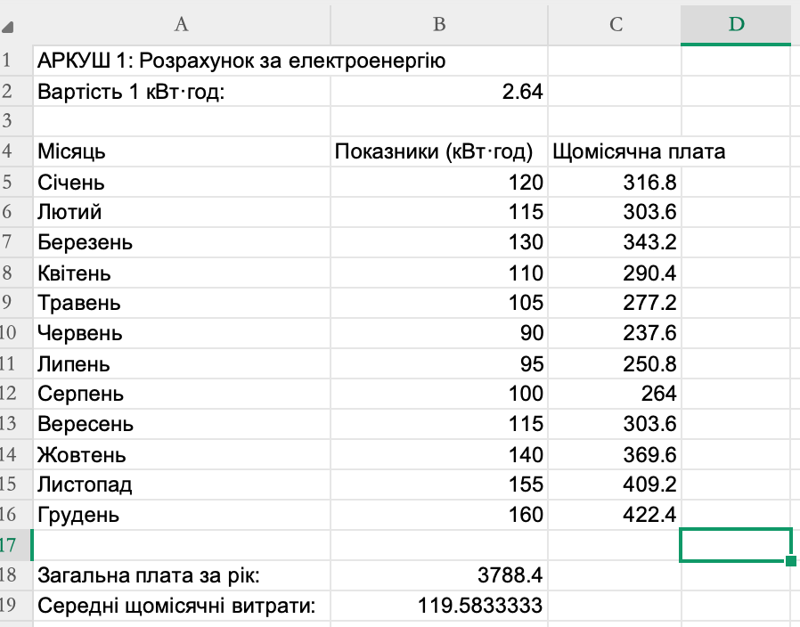
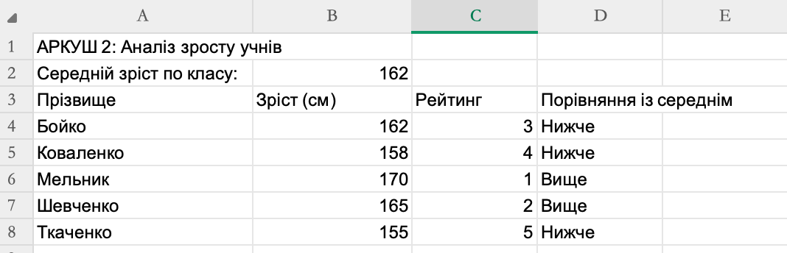
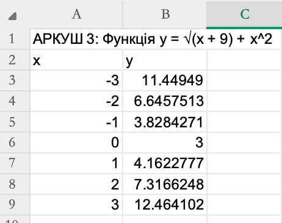

Абсолютні й відносні посилання, математичні та статистичні функції, логічні оператори
Дана практична робота спрямована на закріплення навичок роботи з формулами, функціями та різними типами посилань у середовищі електронних таблиць. У процесі виконання ви навчитеся автоматизувати обчислення, використовувати абсолютну адресацію, статистичні функції (AVERAGE, RANK), логічну функцію IF та математичну функцію SQRT. Робота складається з трьох окремих аркушів, кожен з яких ілюструє певний аспект опрацювання даних.

Рис. 1. Аркуш 1 — таблиця розрахунку щомісячної плати за електроенергію.
На першому аркуші виконано розрахунок щомісячної плати за спожиту електроенергію. У клітинці B2 зафіксовано вартість одного кіловат-години (2,64 грн). У стовпці B наведено показники споживання за кожен місяць (у кВт·год). У стовпці C обчислено суму до сплати за формулою, що множить споживання на тариф.
Ключовим моментом є використання абсолютного посилання на тариф: =$B$2. Завдяки символам долара адреса комірки з тарифом залишається незмінною під час копіювання формули вниз по рядках. Якби було використано відносне посилання (B2), то при копіюванні формули в рядок для лютого адреса змінилася б на B3, що призвело б до помилки.
У нижній частині аркуша за допомогою функції SUM підраховано загальну плату за рік, а функція AVERAGE обчислює середнє місячне споживання електроенергії.

Рис. 2. Аркуш 2 — обчислення рейтингу та порівняння із середнім зростом.
Другий аркуш присвячено статистичному аналізу даних про зріст п'яти учнів. У клітинці B22 обчислено середній зріст по класу за допомогою функції AVERAGE, яка приймає діапазон B25:B29.
У стовпці C визначено рейтинг (ранг) кожного учня. Функція RANK приймає три аргументи: число, для якого визначається ранг; діапазон чисел, серед яких виконується порівняння; порядок сортування (0 — за спаданням, тобто найбільше значення отримує ранг 1). Діапазон у функції зафіксовано як абсолютне посилання $B$25:$B$29, щоб під час копіювання формули вниз межі масиву не зміщувалися.
У стовпці D використано логічну функцію IF. Вона перевіряє, чи перевищує зріст учня середнє значення по класу (комірка B22). Якщо умова істинна, виводиться текст «Вище», інакше — «Нижче». Посилання на середній зріст також абсолютне ($B$22), щоб формула коректно працювала для всіх учнів.

Рис. 3. Аркуш 3 — табулювання математичної функції з використанням SQRT.
Третій аркуш демонструє застосування математичної функції SQRT (квадратний корінь) для табулювання складеної функції. У стовпці A задано значення аргументу x від -3 до 3 з кроком 1. У стовпці B обчислюється значення функції за формулою:
У синтаксисі електронних таблиць це записується як =SQRT(A33+9)+A33^2. Оператор ^ використовується для піднесення до степеня. Зверніть увагу, що для від'ємних значень x вираз під коренем залишається додатним завдяки додаванню 9, що забезпечує коректність обчислень на всій області визначення.
Після введення формули в першу клітинку стовпця B її можна скопіювати вниз за допомогою маркера автозаповнення. Оскільки посилання на клітинку з аргументом x є відносним (A33, A34, ...), при копіюванні адреса автоматично змінюється на відповідний рядок.
Під час виконання практичної роботи №8 було опановано:
Отримані навички є базовими для подальшої роботи з електронними таблицями та необхідні для автоматизації будь-яких розрахунків у табличному процесорі.